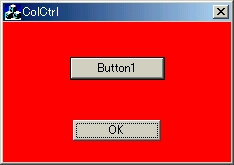
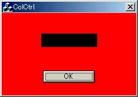
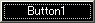
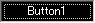

コントロールの背景色の変更にあたって，プログラマが一番困惑するのがプッシュボタンの背景色変更であろう．作者もこの問題に１年以上悩まされてきた※1．なぜならMSDN Libraryにはその方法が詳しく記述されていないからである．本節では，ボタンコントロールの背景色変更（１）として，まずMSDN Libraryやいろいろなweb siteに掲載されているボタンの背景色の変更の方法とその問題について述べ，より正確にボタンの背景色を変更するために重要な概念である，「動的サブクラス化とその必要性」に触れていく，
| ●従来の方法とその問題点 |
本コーナーでも紹介しているとおり，背景色の変更を行うためには，OnCtlColor関数内において，背景色として設定したいブラシハンドルを返却すればよいのであった．したがってボタンもコントロールの一部であることにはかわりがないから，この方法のとおり背景色を変更することができるはずである．早速作業にとりかかるのであるが，ここでは実装を楽にするために，スタティックコントロールとエディットコントロールのコーディングをすべて削除してしまう．（現在のままでは，面倒くさいという理由もあるが）
まずCColCtrlの宣言部を以下のように訂正する．訂正といってもダイアログの背景色を決めるブラシのみを残して，ボタンの背景色となるブラシを定義しただけである．
つぎにOnInitDialogを編集する．ここもダイアログ背景色のブラシ設定のみを残し，ボタンの背景色のブラシを設定しているだけである．
最後にOnCtlColor関数を編集してみよう．この関数を呼び出したコントロールがボタンであれば，ボタンの背景ブラシを返却するという単純コーディングである．
さて，ここで実行してみよう．すると背景色が変更されないことがわかる（figure3.11）．実際ボタンの背景色を変更するときだけは，ボタンをオーナー描画に設定しなければならない．そこで，リソースエディタを開き，ボタンのプロパティを開く．スタイルタブの中のオーナー描画をチェックする．こうすることで，このボタンはオーナー描画ボタンに設定されたことになる．そして実行した結果がfigure3.12である．
 
figure3.11 非オーナー描画の場合 figure3.12 オーナー描画にした場合．この結果を見ると，figure3.12では，ボタンの背景色が変更されているので一見成功しているように見える．しかし肝心なボタンのキャプションが見えない．皆さんにもいろいろ試してみてほしいが，背景色を何色にしてもキャプションが見えないのである．つまりボタンの上に，じかにブラシで上塗りしたようなボタンが出来上がったことになる．これで満足されるのであればそれまでだが，はっきり言って役に立たないと思わないだろうか？さてこの失敗の原因はなんだろうか？
従来の方法で失敗したのは，他のコントロール（スタティックコントロールやエディットコントロール）の背景色の変更と異なる点があるためである．それは，「オーナー描画」に設定したことである．「背景色変更のフレームワーク」の節でも述べたと思うが，もともとコントロールの描画責任は，コントロール自体にある※3．そこで我々は，各コントロールが持つデバイスコンテキストを描画前に書き換えてあげた．そうするとコントロールは，書き換えられたデバイスコンテキストで，自分自身を描画するので，描画色が変更されたコントロールが描かれるのである．
しかし，オーナー描画にでは，描画責任は全てプログラマー側に移る．これは非常に厄介なものである．なぜなら，フォーカスを持たないとき，フォーカスを持つとき（選択されているとき），押されているとき，無効状態であるときと全ての場合に対応しなくてはならないからである．
table3.1 ボタンの状態と描画色変更 フォーカスあり
フォーカスなし
押された
無効状態


これらの問題を解決するために，MFCでは「動的サブクラス化※4」という手法が用意されている．動的サブクラス化とは，特定のウィンドウに対するサブクラス（派生クラス）を作成することである．しかし，一般的に言われる派生クラスは，プログラムの実行前に作成されるが，動的サブクラス化では，プログラムの実行後（実行中）に作成されるものである．
ダイアログ上のボタンコントロールは，通常CButtonクラスである．したがってCButtonクラスの性質は保存し，かつそのメンバ関数には無い特定の動作をさせるためには，派生クラスを作成するしかない．そこでダイアログ上の派生クラスを動的に作る必要性が出てくる．このために動的サブクラス化を使用する意義が出てくるのである．今回は背景色を変更するのであるが，通常CButtonクラスが行う自分自身の描画処理を，派生クラスで行えば背景色も変更できるだろう．動的サブクラス化は，あまり知られていないかもしれないが，以外に使われていることがある．例えばボタンにビットマップを貼り付けたビットマップボタンがいい例である．ダイアログ上のボタンは通常CButtonクラスであるが，ダイアログのメンバ変数としてCBitmapButtonクラスというCButtonクラスの派生クラスを用意し，ボタンの持つクラスを動的にCBitmapButtonクラスとすることで，ビットマップボタンを作ることができる．
と文書で説明してもあまりピンとこないと思うので，次節で，実際にCButtonクラスを派生クラスとしてCColorButtonクラスを作成し，動的サブクラス化していこうと思う．
※1 本節は，作者がいろいろ悩み，試行錯誤して学んだことのノウハウを少しでも伝えられたらという願いをこめて作成されている．したがってこれが正しい答えであるとは断言できない．ただ「このようにやればうまくい きました」という方法をせつめいしているのに過ぎない．
※2 と，勝手に作者が思っているだけである．決してMicrosoftを批判しているわけではない．
※3 このオブジェクト自身の振る舞いをオブジェクトに任せてしまう考え方は，現在プログラミング界で取り上げられるオブジェクト指向そのものである．
※4 これについて詳しく知りたい方は，MSDN Libraryの［サポート技術情報］--［VisualC++］--［[MSVC] MFC を使用しての動的サブクラス化］を参照してほしい．
←Back［エディットコントロール］ -- Up［コントロールの背景色を変更する］ -- Forward［ボタンコントロール（2） ］→
VisualC++でソフトを作ろう (c) 藤門千明